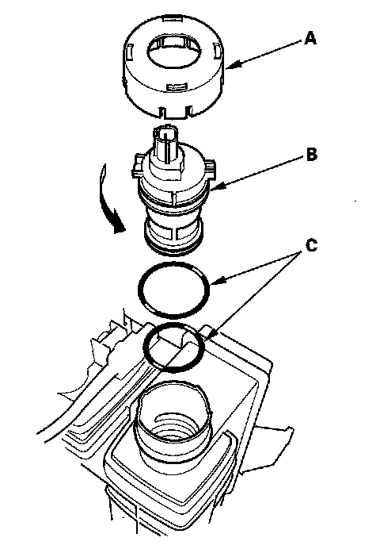

Canister Vent Valve: Service and Repair
EVAP Canister Vent Shut Valve Replacement1. Remove the EVAP canister.

2. Remove the cap (A).
3. Remove the EVAP canister vent shut valve (B).
4. Install the parts in the reverse order of removal with new O-rings (C) and a new cap (A).
NOTE: Do not coat the a-rings with oil.